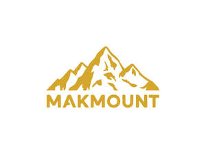

Trade Mark Journal No.2025/015 11 April 2025
UK00004178673 24 March 2025 (9,20,21)

- Class 9
- Neon lights [signals]; Flashing lights [luminous signals]; Fluorescent lamp ballast for electric lights; Neon signs; Flashing safety lights; Warning lights [flashing beacons]; Strobe lights [warning beacons]; Neon light indicators for use in electrical circuits; Ballasts for halogen lights; Dimmer switches for lights; Warning lights [beacons]; Darkroom lights; Fluorescent lamp ballasts; Blinkers [signalling lights]; Wall lights (fittings for -) [switches]; Stroboscopic lamps [warning beacons]; Rotating lights [signalling]; Starters for electric lights; Electric light dimmers; Beacon lamps.
- Class 20
- Frames; Frames for pictures; Frames for mirrors; Picture frames; Frames (Picture -); Mouldings for picture frames; Frames for photographs; Mirror frames; Picture rods [frames]; Photo frames; Furniture frames; Display frames; Moldings for picture frames; Photograph frames; Bed frames; Frames (Picture -) of metal; Mounts [frames] for photographs; Embroidery frames; Frames (Embroidery -); Picture holders [frames]; Frames for signboards; Moldings [mouldings] for picture frames; Picture frames (Moldings [mouldings] for -); Leather picture frames; Kneeling frames; Photograph frames of wood; Picture frame mouldings; Mouldings made of wood for picture frames; Carved picture frames; Photograph frames of metal; Frames for display boards; Mouldings made of plastics for picture frames; Holders for photographs [frames]; Paper picture frames; Picture frames of precious metal; Picture frame moldings; Frames (Picture -) of non-metallic materials; Mouldings made of substitutes of wood for picture frames; Picture and photograph frames; Picture frame brackets; Brackets (Picture frame -); Picture frames [not of precious metal]; Shelving frames, not of metal [furniture].
- Class 21
- Tumblers; Holders for tumblers; Tumblers for use as drinking glasses; Tumblers [drinking vessels]; Glass mugs; Glass carafes; Goblets; Glass decanters; Glass stoppers for bottles; Mugs; Cups and mugs; Carafes; Decanters; Ceramic mugs; Pewter goblets; Porcelain mugs; Mugs of porcelain; Glass stoppers; Stoppers (Glass -); Beer mugs; Glass bowls; Bowls (Glass -); Glass bottles; Earthenware mugs; Glass cups; Glass flasks [containers]; Glassware; Drinking glass holders; Bottle pourers; Drinking goblets; Insulated mugs; Drinking mugs made of porcelain; Beverage glassware; Drinkware; Stemware; Glass tableware; Coasters (tableware); Glass flasks; Tankards; Insulated bottles [flasks]; Pewter tankards; Glass holders; Mugs made of plastic; Glass vases; China mugs; Mugs of china; Vacuum mugs; Glass plates; Demitasse sets comprised of cups and saucers; Glass flowerpots; Plastic coasters; Coffee mugs; Plastic bottles; Insulated glass holders; Glass containers; Glass jars; Porcelain coasters; Glass pots; Pint tankards; Bottles; Glass ornaments; Jars (Glass -) [carboys]; Glass jars [carboys]; Mugs made of porcelain; Glasses, drinking vessels and barware; Candlesticks of glass; Glass candlesticks; Insulated lids for plates and dishes; Fruit bowls of glass; Planters of glass; Glass holders for candles; Glass lids for industrial packaging containers; Wine decanters; Figurines of glass; Decorative sand bottles; Crystal [glassware]; Dispensers for liquids for use with bottles; Vacuum bottles [insulated flasks]; Glasses [receptacles]; Mugs made of earthenware; Glass goldfish bowls; Mugs of precious metal; Bottle openers [hand-operated]; Pilsner glasses; Plastic cups; Pint glasses; Plastic bowls [household containers]; Glass caps; Pilsner drinking glasses; Glass [receptacles]; Glass vials [receptacles]; Beer jugs; Cutlery trays; Wine pourers; Mixers, manual [cocktail shakers]; Margarita glasses; Sippy cups; Cocktail glasses; Prize cups of porcelain, ceramic, earthenware, terra-cotta or glass; Teapots; Shaker bottles sold empty.
MAKMOUNT LIMITED